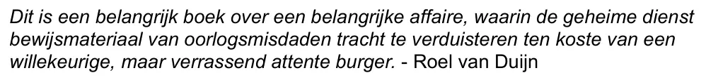

Prueba · Correo electrónico
Roel van Duijn a Giltay, 8 de mayo de 2015
El pasaje
«Es un libro importante sobre un caso importante, en el que el servicio secreto intenta ocultar pruebas de crímenes de guerra a costa de un ciudadano cualquiera, pero sorprendentemente atento». Página 1, el párrafo en cursiva en mitad del mensaje. Traducido del neerlandés; el texto original figura a continuación.
Texto original
“Dit is een belangrijk boek over een belangrijke affaire, waarin de geheime dienst bewijsmateriaal van oorlogsmisdaden tracht te verduisteren ten koste van een willekeurige, maar verrassend attente burger.” En el documento, la frase forma un párrafo aparte, en cursiva, seguido de la atribución «- Roel van Duijn», con un simple guion. La cita de la sección de voces omite esa atribución, al igual que la transcripción del texto original.

Por qué importa este documento
Roel van Duijn, un político que durante décadas fue él mismo objeto de seguimiento por parte de los servicios de inteligencia, incluyó su juicio sobre el libro como un párrafo aparte, en cursiva, en un breve mensaje personal, y firmó ese párrafo con su propio nombre. La cita de la sección de voces procede de este correo electrónico.
Procedencia
- Documento
- Correo electrónico, una página, impresión en PDF desde la cuenta de Gmail del destinatario
- Remitente
- Roel van Duijn, político. El encabezado solo muestra el nombre visible «Roel»; su dirección de correo electrónico está tachada en este PDF
- Destinatario
- Edwin Giltay
- Fecha
- 8 de mayo de 2015, 17:01
- Asunto
- «Re: Diepvriesfiguur» (personaje congelado)
- Intercambio
- Un solo mensaje; el encabezado de Gmail indica «1 bericht» (1 mensaje). El mensaje al que respondía Van Duijn no forma parte de esta impresión
- Firma
- Roel van Duijn, presentado como «Liefdesverdrietconsulent» (consultor para el mal de amores), con los sitios web liefdesverdriet.info y roelvanduijn.nl
- Tachado
- La dirección de correo electrónico del remitente, el nombre de la primera línea y los datos de dirección y teléfono de la firma están tachados
- Idioma
- Neerlandés
- Citado en
- Nota final 399 del libro (edición inglesa), que sitúa el origen de la recomendación en este correo electrónico
- Copia
- Impresión en PDF del 25 de julio de 2026 desde Gmail, como muestra el pie de página
- Páginas
- 1
- Conservado por
- Edwin Giltay, el destinatario
Citado en: la sección de voces bajo el epígrafe «El encubrimiento, descifrado».
Ficha de prueba: https://
Documento: https://
Modificado por última vez el 26 de julio de 2026, consultado el 26 de noviembre de 2026.

Esta página es una ficha de prueba del libro El general del encubrimiento de Edwin Giltay y del sitio web que lo acompaña.